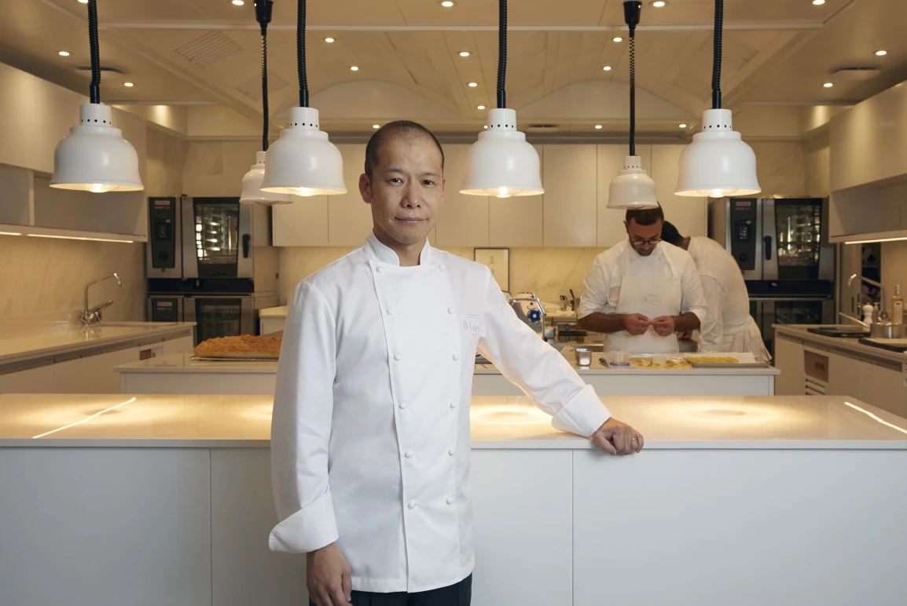
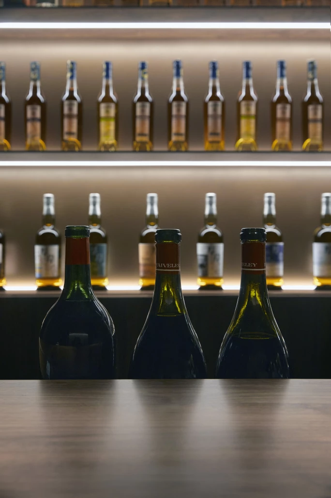
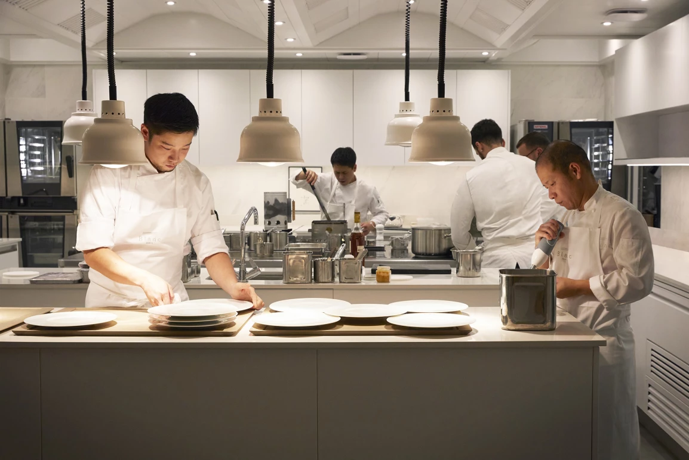
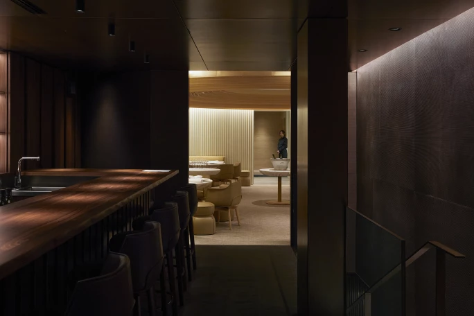

譯自 Nina Caplan · Sotheby's Hong Kong · 2023年10月26日
珍饈：陳泰銘環球心水餐廳精選
網站： blanc-paris.com
地址： 52 rue de Longchamp, 75116, Paris, France
佐藤真一（Shinichi Sato）來自日本北海道，在札幌接受培訓後，於2000年抵達法國，自此立足此地。除了曾短暫在西班牙工作過，他一直在法國做廚，美食膾炙人口，口碑載道。2011年，他憑藉精緻又具創意的料理菜式，成為首位摘下米其林二星的日裔法國廚師。他的餐廳Passage 53座落在巴黎第二區，店面不大，卻因出色的酒單與佳餚而大受歡迎；餐廳供應的美酒，亦由佐藤親自細選。雖然佐藤幾乎未曾就廚藝和品酒技巧正式拜師學藝，不過他總找到行業中的頂尖人才助他一臂之力，汲收各種知識。

主廚佐藤真一
佐藤小時喜愛觀看以酒店主廚為主角的烹飪節目，19歲時開始在札幌大酒店工作。不過，真正令他醉心的是法國菜，雖然他本人也不知道原因為何。他分享道：「當時我從未嚐過松露、魚子醬或鵝肝，無法想像這些食材的味道。」而他也深知，在札幌找到答案的機會不大。
至於對葡萄酒的興趣，始於他在日本知名精品葡萄酒零售商愛諾特卡（Enoteca）的工作經驗。「我能夠逐一細嚐木桐堡（Mouton Rothschild）、拉菲古堡（Chateau Lafite）⋯⋯這些葡萄酒妙不可言、精彩絕倫！」佐藤說。這些年來，他品酒無數，但與佳釀的早期邂逅，顯然仍縈繞心頭。
來到歐洲後，他加入了Pascal Barbot在巴黎的米其林星級餐廳L'Astrance，又在西班牙北部Andoni Luis Aduriz開設的著名餐廳Mugaritz工作兩年，後者的經驗更為佐藤的料理風格添上淡淡的巴斯克風味。其後，他對布艮地產生興趣，於是前往布艮地兩大知名酒莊Domaine Dujac和Domaine Roulot工作。此行不但讓他獲益匪淺，而且亦建立人脈，令他更易獲得按配額制度銷售、產量少而備受渴求的葡萄酒。他說「我熱愛葡萄酒」，其酒單亦印證他所言非虛。

「Coche-Dury 和 Ramonet 跟什麼都搭。」
令佐藤一舉成名的是Passage 53 ——餐廳在短短數月內取得米芝蓮一星，六年後再獲二星殊榮。2013年，他成為羅萊夏朵（Relais & Chateaux）主廚，卻認為這家只有20個座位的餐廳「太小」，他曾言「我在這裡能做的有限，而我想大展拳腳。」他開始物色其他地方，但疫情煞停了一切。直至今年9月，他才終於與隈研吾建築都市設計事務所合作，在巴黎第16區開設Blanc。雖然餐廳的空間同樣有限，只有30個座位，但設計精美，明亮而優雅，更設有酒吧（佐藤說只會供應開胃酒，至少開業初期是）和一個日式裝潢的私人包廂。至於酒單方面，佐藤不打算提供價格達五位數字的頂級葡萄酒和自然酒（他堅定表示自己不喜歡這類酒）；不過酒窖的美酒數量超過7,000瓶，保證每位客人都能喝得酣暢淋漓，盡興而歸。

烹飪方面，北海道與法國之間的距離並不如想像般遙遠。北海道是主要的農業用地，有草地和乳牛，牛奶生產量佔全日本一半。當地製造奶油、優格、冰淇淋和巧克力，甚至還有北海道卡蒙貝爾起司。然而，佐藤幾乎不以日本食材入饌：「我也不知道為什麼，它們就是不適合我。」不過，他認同其出身對他的料理有著無可避免的影響。他說：「我有日本人的口味，但我做的是法國菜。我喜歡精巧、簡單、細緻。」他認為簡樸並非看上去那麼簡單，「這代表要保持原汁原味，並不容易。」
佐藤並不特別熱衷於美酒佳餚搭配的藝術，表示「Coche-Dury和Ramonet跟什麼都搭！」話雖如此，他同意一位出色的侍酒師能讓用餐體驗錦上添花，亦開始思考如何以他曾經品嚐過的Domaine Armand Rousseau Chambertin搭配鴿子。事實上，Le Restaurant Blanc的主廚佐藤擁有一位非常傑出的侍酒師：陳泰銘先生本人。陳泰銘先生不僅為餐廳酒窖提供部分世上最佳的葡萄酒，他亦擔任首席侍酒師，根據其最高標準培訓團隊。

如今美酒價格不斷上漲，佐藤慨嘆他入行時享用過的好酒已經變得難以負擔，而他亦將興趣轉移到烈酒。「初次喝拉弗格（Laphroaig）時，我覺得它的煙熏味太重，讓人喝不下去，不過現在嘛……」當拉弗格的價格亦開始上升（佐藤顯然極富遠見），他轉向卡爾瓦多斯（Calvados）和雅文邑（Armagnac），又表示「我現在熱愛蘭姆酒！」佐藤對新事物的開放心態令人佩服，例如他本對雞尾酒毫無興趣，卻因朋友在東京擔任調酒師而開始探索雞尾酒的可能性；與此同時，他還在增進干邑白蘭地方面的知識。佐藤一邊鑽研這些學問，一邊準備餐廳開業，還要積極維持他在Passage53獲得的美譽，面對的壓力可謂不小。不過，這世上有如此多的知識和新風味有待發掘，奪星獲獎已然不是他關注的重點。法文Blanc意思是白色，對佐藤來說，新餐廳最令人振奮之處，就是讓他能夠在一幅潔白的畫布上任意發揮。
相片提供：Le Restaurant Blanc